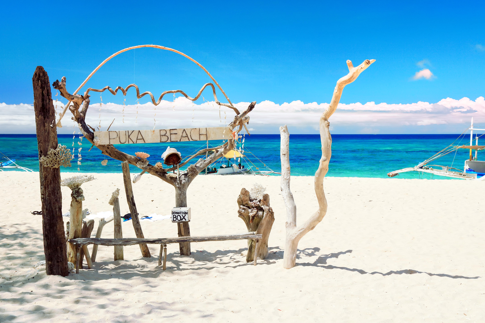

While Boracay is famous for its stunning beaches, the island also boasts several exciting attractions that showcase its natural beauty and cultural heritage. Explore these must-visit attractions during your stay in Boracay:
1. Willy's Rock

Willy's Rock is one of the most iconic landmarks on Boracay. Located on White Beach, this volcanic rock formation is topped with a small chapel and offers a picturesque backdrop for your beach photos.
2. Mount Luho
For panoramic views of Boracay, head to Mount Luho, the island's highest point. You can hike or ride an ATV to the summit, where you'll be rewarded with breathtaking vistas of the island and its surrounding waters.
3. Puka Shell Beach
Located on the northern part of the island, Puka Shell Beach offers a more tranquil and less crowded beach experience compared to White Beach. The beach is known for its abundance of beautiful puka shells, which you can collect as souvenirs.
4. Boracay Butterfly Garden
Visit the Boracay Butterfly Garden to marvel at a variety of colorful butterflies in their natural habitat. This serene garden also houses a collection of preserved insects and educational displays about the butterfly life cycle.
5. Diniwid Beach

Diniwid Beach is a secluded and picturesque cove located just a short walk from White Beach. It's an excellent spot to enjoy a quieter beach experience and take in the stunning scenery.